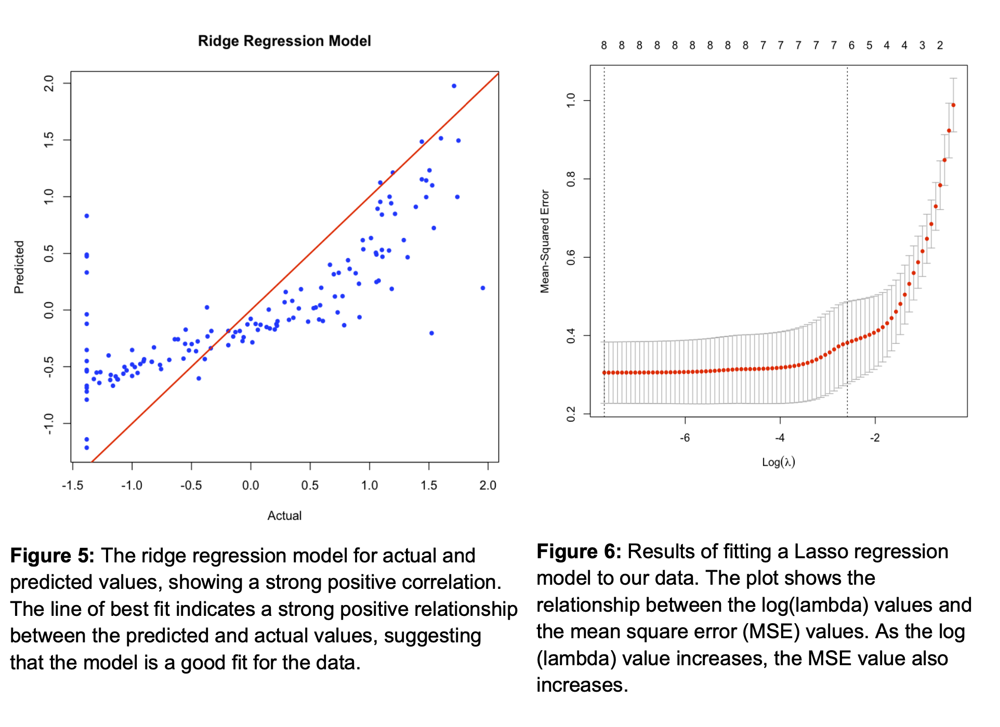

PREDICTION OF GENDER INEQUALITY ACROSS THE WORLD
ABSTRACT
Gender inequality remains a critical global challenge, impacting the lives of millions as well as social and economic progress. This study aims to explore various aspects of gender inequality worldwide and identify factors that influence these disparities and their changes over time. We utilized data from the United Nations Development Programme (UNDP) on the Gender Inequality Index (GII), our analysis focuses on predicting GII values using multiple regression models, including Linear Regression, Ridge Regression, LASSO Regression, and Random Forest. The performance of these models was assessed based on the Root Mean Square Error (RMSE). Our findings indicate that the Random Forest model demonstrates the highest accuracy in predicting GII values, providing valuable insights for policymakers and stakeholders to address gender inequality. By understanding the factors contributing to gender disparities and tracking their progress over time, we can better inform policies and strategies that promote gender equality and contribute to a more just and inclusive world.
INTRODUCTION
Gender inequality remains a pressing global issue, affecting individuals and societies in various aspects such as education, employment, and political representation. Understanding the factors contributing to gender inequality is essential for developing effective policies and interventions that promote equity and empower individuals to realize their full potential.
This report presents the findings of a research project that aimed to predict gender inequality worldwide using various methods, including linear regression, ridge regression, lasso regression, and random forest methods. By analyzing the Gender Inequality Index (GII) and its correlation with social, economic, and political factors, our research seeks to answer the question: How do we understand various aspects of gender inequality worldwide, and what factors influence these disparities and their changes over time?
This report briefly outlines the methodologies used, presents the results of our analysis and discusses the implications of our findings for policy and future research. By identifying the most accurate model for predicting gender inequality and the key factors driving it, this research aims to inform policies and interventions that will promote gender equity and contribute to a more inclusive and prosperous world.
BACKGROUND
Gender inequality refers to the unequal treatment or opportunities individuals face based on gender. It is a persistent issue that affects individuals and societies worldwide, impacting various areas of life, such as education, employment, and political representation. The Gender Inequality Index (GII) is a tool that measures gender inequality across countries, considering aspects such as reproductive health, empowerment, and economic status. Understanding the factors driving gender inequality is crucial for developing effective policies and interventions that promote equity and empowerment for all individuals. This research project aims to explore the key factors contributing to gender inequality worldwide using various regression methods.
METHODOLOGY
Data Collection
The data collected for the Gender Inequality Index (GII) and six social, economic, and political factors (Maternal Mortality Ratio, Adolescent Birth Rate, Women’s Share of Seats in Parliament, Female Population with Some Secondary Education, Male Population with Some Secondary Education, Female Labor Force Participation Rate, and Male Labor Force Participation Rate) from the United Nations Development Programme (UNDP) database for 189 countries in 2021. The GII data was obtained from the Human Development Reports of the UNDP. We excluded other potential predictors of gender inequality, such as gender inequality index value and gender inequality index rank, due to their high correlation with the selected variables.
Data Preprocessing
The data has been cleaned and transformed to ensure consistency and comparability across countries. We checked for missing values, outliers, and data entry errors and made necessary corrections.
Statistical Models
To explore the factors contributing to gender inequality worldwide, we used multiple regression analysis. Specifically, we used four regression models – linear regression, ridge regression, lasso regression, and random forest – to predict the Gender Inequality Index (GII) based on six social, economic, and political factors: Maternal Mortality Ratio, Adolescent Birth Rate, Women Share of Seats in Parliament, Female Population with Some Secondary Education, Male Population with Some Secondary Education, Female Labor Force Participation Rate, and Male Labor Force Participation Rate. The data was split into 70% training data and 30% testing data.
The regression models were fitted using the statistical software R, and we assessed their predictive accuracy using cross-validation.
Linear Regression Model
In this study, we first used a linear regression model as the initial approach for predicting the Gender Inequality Index (GII) based on selected predictors. We utilized the lm() function in R to fit the model and selected the best subset of predictors using various subset selection methods such as minimum BIC, maximum adjusted R-squared, and minimum Cp. We also performed forward and backward stepwise selection to identify the optimal subset of predictors. We assessed the model’s performance by calculating the R-squared value and root mean squared error (RMSE) and visually inspecting the actual versus predicted plot.
Ridge Regression Model
We found evidence of multicollinearity among the predictor variables in the linear regression model. To address this issue, we explored using regularization methods, specifically ridge regression. Ridge regression is a technique that adds a penalty term to the regression equation, which helps to reduce the impact of multicollinearity on the model’s coefficients.
Using the glmnet package in R, we applied ridge regression to our dataset and tuned the hyperparameter lambda using cross-validation. We evaluated the performance of the ridge regression model using the same metrics as the linear regression model, including R-squared and RMSE.
LASSO Regression Model
The LASSO (Least Absolute Shrinkage and Selection Operator) regression model to refine our predictions further and address the multicollinearity issue. LASSO regression is a linear regression that applies a penalty to the model coefficients, shrinking them towards zero and effectively eliminating predictors with little contribution to the model.
Using the glmnet package in R, we fitted the LASSO regression model to our data and used cross- validation to tune the model’s regularization parameter, lambda. We then assessed the model’s predictive accuracy using the same metrics as the linear regression and ridge regression models, including R-squared, RMSE, and actual versus predicted plots.
Random Forest
We also used a random forest model to predict the Gender Inequality Index (GII). Random forest is a machine learning algorithm that builds multiple decision trees and combines their predictions to improve accuracy and reduce overfitting.
Using the randomForest() function in R, we built a random forest model with 500 trees and utilized all the predictors in the dataset. We then used 10-fold cross-validation to evaluate the model’s predictive performance.
Model Evaluation
After fitting multiple models, we must compare their performance to select the best one for our data. In our case, we fitted three models: linear regression, ridge regression, and LASSO regression. We also used the random forest to evaluate the importance of features and compare the models’ performance.
To compare the models, we first evaluated their RMSE values. The RMSE value represents the difference between the actual and predicted values of the target variable (in our case, the GII). The model with the lowest RMSE value is considered the best-performing model.
FINDINGS AND RESULTS
Based on the data collected for all countries, Figure 1 illustrates that many developed countries still hold high Gender Inequality Index (GII) scores. Additionally, the results show that Africa, South Asia, Mexico, and certain parts of South America have high levels of gender inequality, as indicated by their GII scores.
The correlation heatmap (Figure 2) was generated to examine the relationships between various factors and their influence on the GII (Gender Inequality Index). Notably, the HDI (Human Development Index Rank) displays a strong positive correlation with the GII, with a correlation coefficient of 0.75. This finding challenges the conventional assumption that countries with high HDI rankings would exhibit lower levels of gender inequality. Contrary to this expectation, our analysis reveals that countries with high HDI rankings may face more severe issues related to gender inequality. This discovery underscores the need for further investigation into the underlying causes of these disparities and the development of targeted policy interventions to address them.
After fitting the linear regression model using the lm() function in R, we assessed its predictive performance by calculating the R-squared value and root mean squared error (RMSE). The R- squared value of the model was 0.7049286, indicating that the model explains 70.49% of the variability in the Gender Inequality Index (GII). The RMSE of the model was 0.7298689, meaning that, on average, the model’s predictions were off by 0.7298689 units of GII.
We also plotted the actual versus predicted values of GII to assess the model’s performance (Figure 3) visually. The plot showed a strong positive correlation between the actual and predicted values, with most data points falling close to the 45-degree line. This suggests that the linear regression model is a good fit for the data and provides accurate predictions of GII based on the selected predictors.
We also performed forward and backward stepwise selection to identify the optimal subset of predictors for the model. After evaluating the performance of each model using cross-validation, we ultimately chose a linear regression model with eight predictors. The chosen model had an RMSE of 0.7298689, indicating that, on average, the model’s predictions were off by 0.7298689 units of GII.

After performing ridge regression analysis on our dataset, we found that the optimal lambda value was 0.6448. Using this lambda value, we could fit a model and observed that as the log of lambda increased, the mean square error also increased, indicating the presence of some degree of bias in the model (Figure 4). Furthermore, the predicted values showed a strong positive correlation with the actual values, as shown in Figure 5. The ridge regression model’s root means squared error (RMSE) was 0.6027686. Overall, these results suggest that the ridge regression model can be an effective tool for predicting gender inequality index values based on various predictors and may provide valuable insights for policymakers and researchers in addressing gender inequality.
Results of fitting a Lasso regression model to our data showed that as the log(lambda) value increases, the mean square error (MSE) value also increases (figure 6). After looking at the coefficients of the best model, there was no need to shrink the coefficients to zero in our model, indicating that all the predictor variables helped predict the response variable. The RMSE for the lasso regression model is 0.484732.
The random forest model presented in Figures 7 and 8 displayed typical behavior, where increasing the number of trees could enhance its performance on the dev set. Still, additional trees may provide little benefit beyond a certain point and could increase the risk of overfitting. Although the model seemed overfitting due to the substantial difference between the training set and dev set errors, the dev set error was still relatively low, indicating that the model was performing well on the dev set. The RMSE for the best model was 0.08925188, implying that the model’s predictive accuracy was high.
The performance of the best model (Figure 9) shows that increasing the number of trees in the model improves its performance. Specifically, as the number of trees in the model increases, the RMSE (root mean squared error) decreases, indicating that the model's predictive accuracy is improving.Moreover, the variable importance plot (Figure 10) highlighted the maternal mortality ratio as the most crucial factor for predicting GII, followed by female secondary education and adolescent birth rates. The importance of these variables is consistent with existing literature on gender inequality, where maternal health and education are considered critical factors for women's empowerment and gender equality.

Based on the results presented in Table 1, we can see that the random forest model had the lowest RMSE value of 0.089, indicating that it performed the best in predicting the Gender Inequality Index (GII). This result is consistent with the random forest algorithm’s behavior, which effectively handles complex relationships in the data and reduces the risk of overfitting.
We can also see that the other models’ RMSE values improved as more variables were included or as more complex methods were used, indicating that each step improved the model’s performance. However, the random forest model consistently outperformed the other models, indicating that it was better able to capture the patterns in the data and make accurate predictions.
CONCLUSION
In the comparative analysis of various predictive models, the Random Forest algorithm demonstrated superior performance, achieving the lowest Root Mean Square Error (RMSE) value. This indicates that the Random Forest model offers greater accuracy relative to the other models examined in this study.
While linear regression, ridge regression, and lasso regression techniques yielded higher RMSE values, they remain relevant in scenarios with limited data or fewer variables to analyze. Conversely, the Random Forest model provides a more robust and accurate prediction when handling intricate and highly correlated data, such as that found in the Gender Inequality Index. The investigation conclusively demonstrates that the Random Forest model is the most effective method for predicting gender disparities based on a diverse range of factors, including disparities in paid and unpaid labor, the Gender Inequality Index, and the gender wage gap. This critical insight can empower policymakers and stakeholders to make informed decisions and implement successful gender equity interventions.
In conclusion, gender inequality continues to impact women and girls worldwide, leading to social disadvantages in various sectors, including the economy, education, and leadership. Despite progress in some nations, true gender parity remains elusive. In other words, gender inequality continues to be a tenacious and widespread issue across the globe, with the highest degrees of disparity concentrated in southern Africa, South Asia, and South America. These regions encounter distinct gender-related challenges, such as restricted access to education and healthcare, prejudiced social norms and customs, and limited employment opportunities for women.
The empowerment of women is crucial for fostering economic growth and social progress. Implementing national and international policy reforms can dismantle structural obstacles that impede women’s access to leadership and enhance their involvement in many fields. Thus, understanding gender disparities and achieving gender equality is not only an ethical imperative for policymakers but also a vital route to a fairer and more prosperous society.
LIMITATIONS
One limitation of our study is the reliance on secondary data sources. While we used reputable databases, there may be limitations in the data quality or comparability across countries. Collecting more granular data on specific factors that influence gender inequality would provide more insights into the mechanisms driving these disparities. Despite this limitation, our analysis provides valuable insights into the key factors contributing to gender inequality index and highlights the need for policies and interventions that promote gender equity and empowerment.
REFERENCE
UNDP. (2021). Gender Inequality Index data In Human Development Reports https://hdr.undp.org/sites/default/files/2021-22_HDR/HDR21-22_Statistical_An nex_GII_Table.xlsx